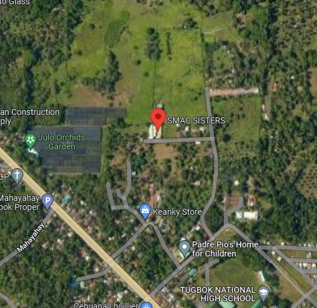

SMAC is a non-government, non-stock, and non-profit organization that focuses on abandoned, neglected, and orphaned children in need of rapid medical attention. The SMAC Sisters took over the CARITAS and served the Parish of Toril after arriving in Davao City on January 17, 1998. seeing the poor parishioners' and their families living conditions. On the day of Saint Joseph's Day, the institution was formally inaugurated. Saint Joseph was Jesus' foster father.
The organization exists, and its advocacy seeks to transform its students into persons who serve the best interest of the common good. Because of this, they serve to provide basic needs for the children to learn more, and also the Education apostolate has been at the core of the Jesuit mission for more than 450 years to help the children in need of learning and growth. The reason that they exist is to provide the children in need of help and guidance and also to achieve basic mastery of basic education, academic engagement, and principles to the children, And also help the children to learn more, and guide them to have a better future.

Purok 6 Habana Compound 8022 Tugbok Davao City
Luz Pepito
09432466811; 082 - 2930949
SMAC SISTERS, 4F7M+GHR, Bukidnon Hwy, Tugbok, Davao City, Davao del Sur, Philippines
His name is Joshua and he describes himself as a Capybara because it is stated on google that a Capybara is a friendly creature and also wild which kind of describes him. He is an average-height guy and likes to experiment with web designs and also codes. He has black hair and brown skin. He also likes to watch cooking videos such as “Master Chef” and also loves to hear and sing songs such as “Yakap sa Dilim’ by Orange and Lemons.